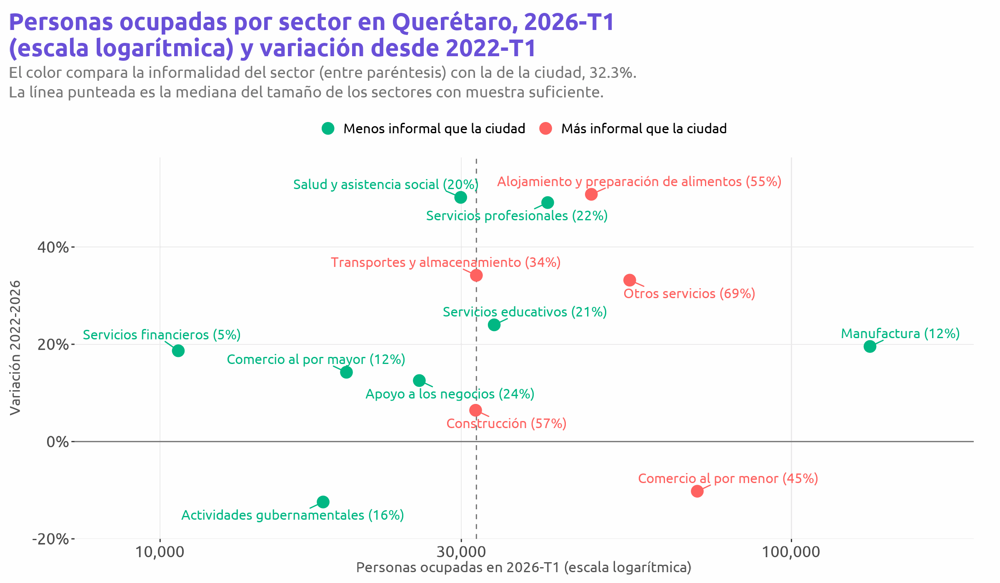
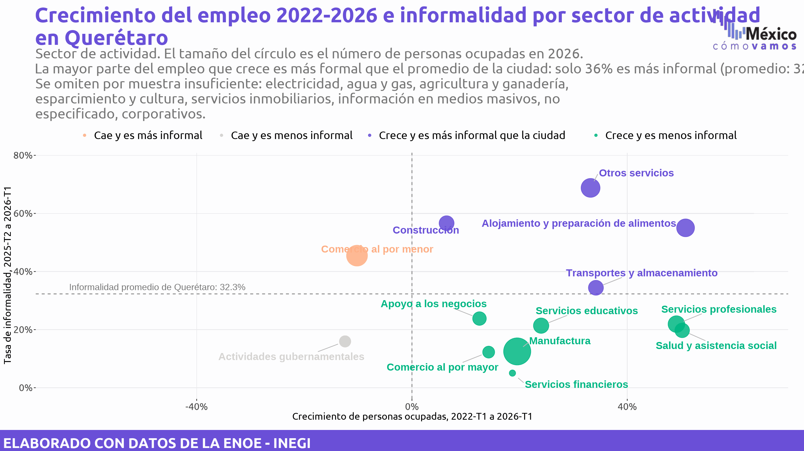
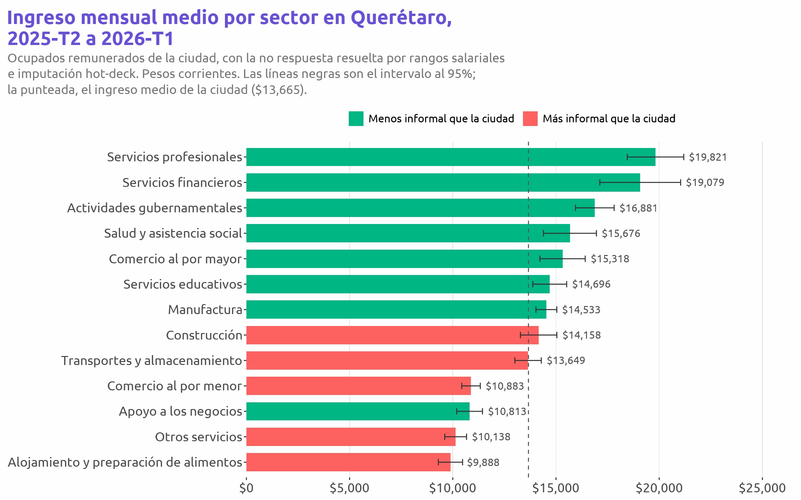
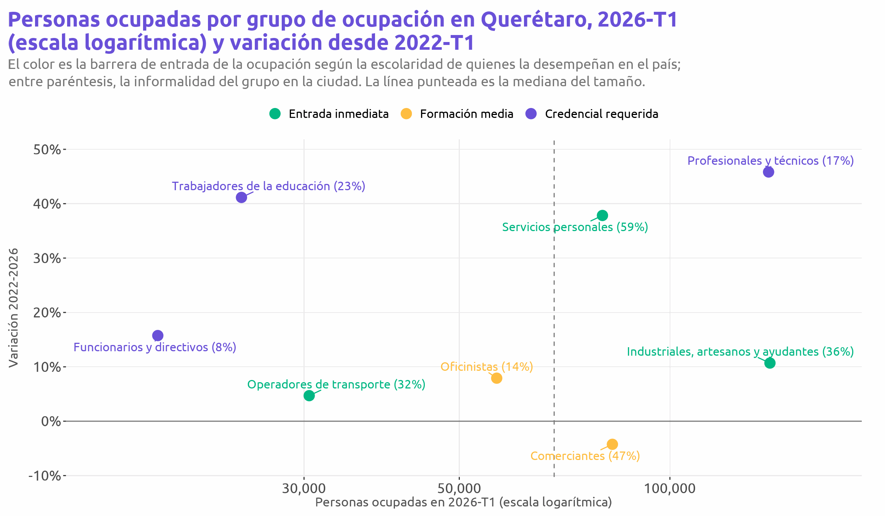
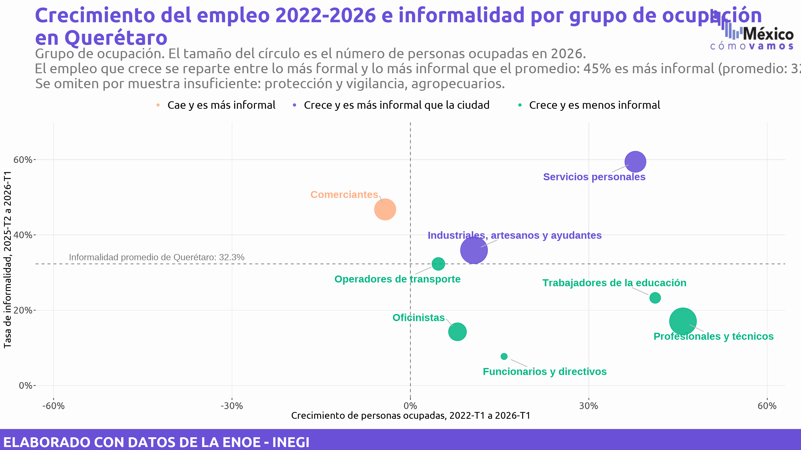
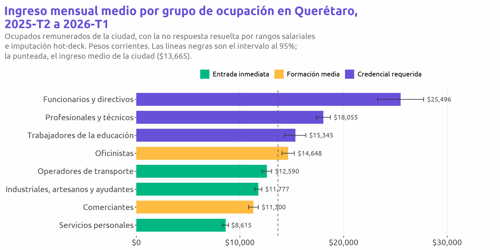
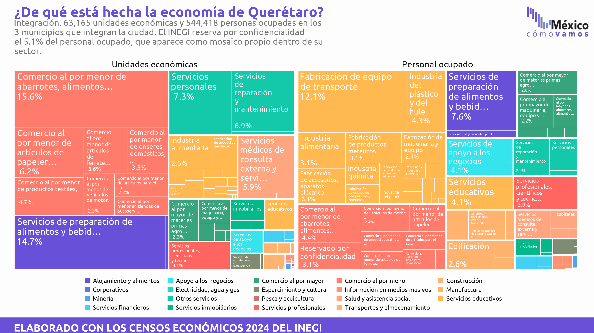

Población ocupada (ENOE, 2026-T1)
Empleo formal (IMSS, mayo de 2026)
Crecimiento del empleo en tres ventanas: ENOE e IMSS
Personas ocupadas (formales e informales) en el primer trimestre de cada año contra puestos asegurados en mayo. La ENOE lleva su intervalo de confianza al 95%; el IMSS es un registro administrativo y no tiene error muestral.
| Ventana | Ocupados ENOE, inicio | Ocupados ENOE, 2026 | Variación ENOE | Puestos IMSS, inicio | Puestos IMSS, 2026 | Variación IMSS |
|---|---|---|---|---|---|---|
| 2015-2026 | 389,523 | 581,542 | 49.3% (39.6 a 59.0) | 380,842 | 589,136 | 54.7% |
| 2019-2026 | 480,783 | 581,542 | 21.0% (13.2 a 28.7) | 508,391 | 589,136 | 15.9% |
| 2022-2026 | 483,484 | 581,542 | 20.3% (12.5 a 28.0) | 537,363 | 589,136 | 9.6% |
Qué sectores crecen y con qué formalidad



Qué ocupaciones crecen y con qué barrera de entrada
Puertas de absorción inmediata (crecen, sin credencial, informalidad en el promedio nacional o mayor): servicios personales. Puertas de integración (crecen, sin credencial, informalidad menor al promedio): industriales, artesanos y ayudantes, oficinistas, operadores de transporte, protección y vigilancia, agropecuarios.



De qué está hecha la economía de la ciudad
Unidades económicas y personal ocupado por subsector, Censos Económicos 2024.

Crecimiento y formalidad: el crecimiento compara los primeros trimestres de 2022 y 2026; la informalidad de cada sector y ocupación se estima con los cuatro trimestres de 2025-T2 a 2026-T1 para ganar precisión, y se compara con la de la ciudad medida igual. Se omiten las celdas con menos de 30 entrevistas en alguno de los dos años. La barrera de entrada de cada ocupación se clasifica a escala nacional por la escolaridad de quienes la desempeñan: credencial requerida si la mitad o más tiene educación superior, formación media si la mitad o más tiene media superior, entrada inmediata en el resto.
Ingreso: ingreso mensual de la ocupación principal de los ocupados remunerados, con la no respuesta resuelta por rangos salariales y hot-deck (método del repositorio MCV-Oxfam de informalidad), en pesos corrientes de 2025-T2 a 2026-T1. Media con diseño muestral; se omiten las celdas con menos de 30 casos.
IMSS: puestos de trabajo asegurados al 31 de mayo de cada año, salario diario asociado deflactado con el INPC a pesos de mayo de 2026. La ENOE cuenta personas y el IMSS puestos, así que los niveles no son comparables entre sí; las variaciones sí.
Fuentes: INEGI, ENOE (microdatos, primeros trimestres de 2015 a 2026 y base acumulada 2025-T2 a 2026-T1) y Censos Económicos 2024; IMSS, datos abiertos de puestos asegurados (2015-2026); Banxico, INPC. Elaboración propia.
Descargas
Las gráficas de esta ficha en PNG. La ficha completa se imprime desde el navegador (Archivo > Imprimir, guardar como PDF).